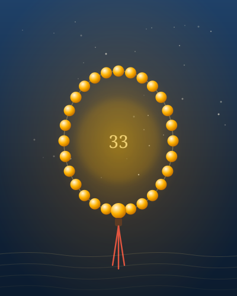
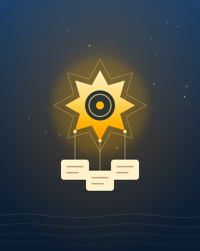
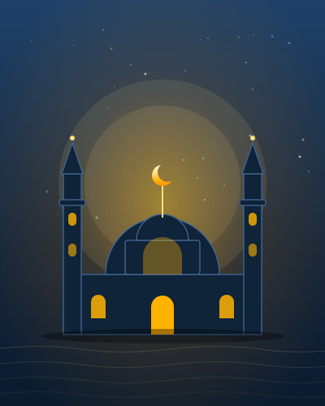
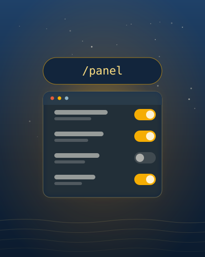

بوت ديسكورد · قرآن وأذكار ودعاء
اجعل سيرفرك عامرًا بالذكر.
بوت واحد يبث القرآن الكريم على مدار الساعة، ويرسل الأذكار والأدعية في أوقاتها، ويدعو لمن تحب بأسمائهم، وكل ذلك من لوحة تحكم بسيطة.
مجاني بالكامل، بلا اشتراكات ولا ميزات مدفوعة
02 · عن البوت
بوت واحد، يغنيك عن بوتات كثيرة.
بوت ديسكورد عام صُمّم ليجمع ما يحتاجه كل سيرفر إسلامي في مكان واحد: قرآن كريم متواصل في روم صوتي، وأذكار موزّعة على أقسام، وأدعية شخصية تحمل أسماء من تحب، مع تذكير بمواقيت الصلاة.
كل شيء يُدار من أمر واحد بسيط /panel بواجهة هادئة وحديثة، وتُحفظ إعداداتك تلقائيًا فلا تضيع بعد أي إعادة تشغيل.
03 · المزايا
مزايا تستحق الإضاءة.
ست مزايا أساسية في البوت. أضئ أي فانوس ثم افتحه لتقرأ تفاصيله.




اضغط لإضاءة الفانوس، واضغط مرة أخرى لقراءة التفاصيل.
04 · طريقة البدء
ابدأ في خمس خطوات.
من الإضافة إلى أول ذكر في دقائق معدودة. افتح أي ضلع لتقرأ الخطوة.
أضف البوت
اضغط زر «أضف البوت إلى سيرفرك»، اختر السيرفر من القائمة ووافق على الصلاحيات. خطوة تستغرق ثوانيَ معدودة.
امنحه ما يحتاجه
يحتاج البوت رؤية الرومات وإرسال الرسائل، والاتصال والتحدث في الروم الصوتي ليبثّ القرآن الكريم.
افتح لوحة التحكم
اكتب /panel وستظهر لك لوحة حديثة بنظام Components V2، تتحكم منها في كل شيء بضغطات بسيطة.
/panelComponents V2واجهة هادئةفعّل الأقسام
شغّل أقسام الأذكار التي تريدها وأوقف الباقي، وحدّد الفاصل بين الرسائل، واختر المنشن أو بدونه.
أضف أسماء من تحب
سجّل أسماء المتوفين والأحياء، وسيُدرجها البوت تلقائيًا داخل الأدعية لتُذكر في كل دعاء.
05 · التحكم الكامل
كل شيء من لوحة واحدة.
ثلاث مجموعات من الإعدادات تجدها داخل /panel. أضئ فانوسًا لترى ما بداخله.
- إضافة الأسماء وحذفها بسهولة
- فصل بين المتوفين والأحياء
- تُدرج تلقائيًا داخل الأدعية
- صياغة دعاء تناسب كل فئة
06 · ابدأ الآن
أطلق فانوسك في سيرفرك.
جاهز؟ أضف البوت الآن ودع سيرفرك يتلألأ بالذكر.
البوت مجاني بالكامل
لا اشتراكات ولا ميزات مدفوعة. التبرّع ليس إجباريًا أبدًا، وهو فقط يساعد في تطوير البوت وفي مساعدة حالات الإحسان.
تبرّع الآنهل أحتاج صلاحيات خاصة لإضافة البوت؟
لإضافة أي بوت إلى سيرفر تحتاج صلاحية «إدارة السيرفر». بعدها يطلب البوت الصلاحيات اللازمة لعمله فقط: رؤية الرومات، إرسال الرسائل، والاتصال والتحدث في الروم الصوتي.
هل يعمل البث طوال اليوم فعلًا؟
نعم، فبث القرآن مصمّم ليعمل 24 ساعة في اليوم و7 أيام في الأسبوع، مع إعادة اتصال تلقائية إذا انقطع الاتصال لأي سبب.
هل أستطيع إيقاف بعض الأقسام؟
بالتأكيد. من لوحة /panel تشغّل أي قسم من الأذكار أو توقفه، وتغيّر الفاصل الزمني، وتختار أن يكون التنبيه بمنشن أو بدونه.
هل تضيع إعداداتي إذا أُعيد تشغيل البوت؟
لا. تُحفظ كل الإعدادات وأسماء الدعاء في قاعدة بيانات، فتبقى كما هي بعد أي إعادة تشغيل.